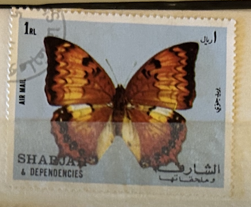
| SOURCE | TITLE| IMAGE MATCH | click to source page |
| GiBud | Gibud.no - Auksjoner på nett. | 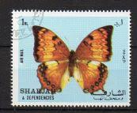 |
| eBay | Entomologie Nymphalidae Charaxes nichetes bouchei Rare Couple RCI-Banco | eBay | 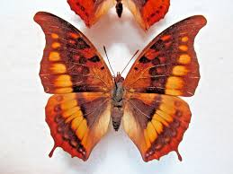 |
| it-n.jp | Charaxes kahruba | 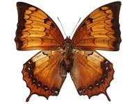 |
| eBay | Entomologie Nymphalidae Charaxes nichetes bouchei Rare Couple RCI-Banco | eBay | 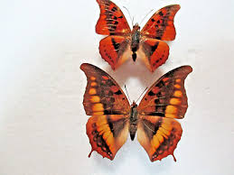 |
| 4StampSales | Mozambique - Queen Nefertiti on Stamps - Mint Stamp S/S MNH 1642 | 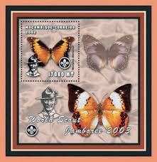 |
| minibeast.co | Silver-striped Charaxes Butterfly Male & Female Pair In Box Frame (Charaxes lasti) | 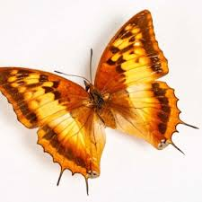 |
| 123RF | Close Up Of Common Leopard Or Spotted Rustic (Phalanta Phalantha) Butterfly, Dorsal View, Isolated On White Background With Clipping Path Stock Photo, Picture and Royalty Free Image. Image 66717706. | 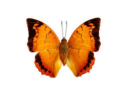 |
| Alamy | A yellow swallowtail butterfly wildlife photograph hi-res stock photography and images - Alamy | 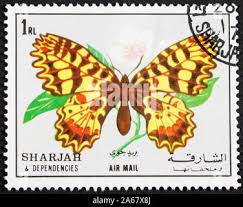 |
| Wikipedia | Charaxes fervens - Wikipedia | 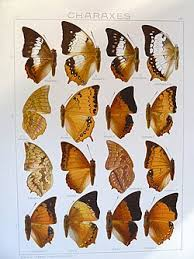 |
| Shutterstock | butterfly Stamp": Over 5,717 Royalty-Free Licensable Stock Photos | Shutterstock | 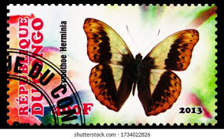 |
| eBay | Nymphalidae-Butterfly -Vidula erota chersonesis (m) - Tapah Hills - Malaysia | eBay | 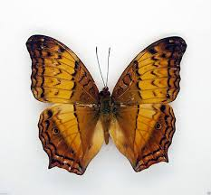 |
| Wikipedia | Charaxes cowani - Wikipedia | 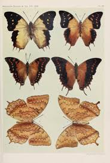 |
| Etsy | Pack of 2 Butterflies Charaxes Aristogiton From China With Closed Wings A1 to Aa- for All Your Taxidermy Art Projects - Etsy UK | 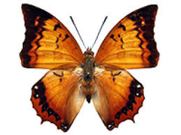 |
| eBay | Mozambican Butterflies Stamps for sale | eBay | 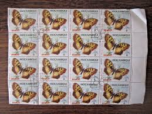 |
| The Insect Collector | TheInsectCollector | 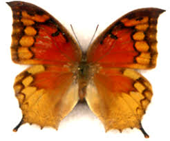 |
| Shutterstock | 4 Thauria Alirs Royalty-Free Images, Stock Photos & Pictures | Shutterstock | 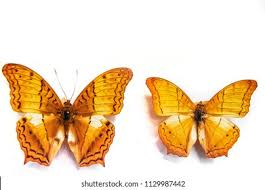 |
| Cambridge Butterfly Conservatory | Butterflies of Egypt and East Africa - Special Exhibition - Cambridge Butterfly Conservatory | 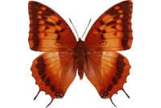 |
| eBay UK | CHARAXES LATONA LATONA - PAIR - unmounted butterfly | eBay UK | 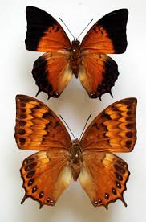 |
| Redalyc.org | Redalyc.Description of two new subspecies and notes on Charaxes Ochsenheimer, 1816 of Angola (Lepidoptera: Nymphalidae) | 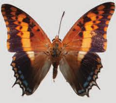 |
| Somerset Academy Silver Palms | I Wonder Why | 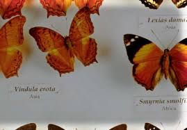 |
| 670 Butterflies patterns ideas to save today | butterfly art, beautiful butterflies, butterfly and more | 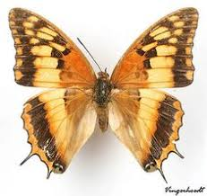 | |
| eBay | N16806. Insects butterflies: Nymphalidae sp. Vietnam, Gia Lai | eBay | 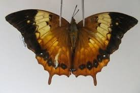 |
| World of Butterflies and Moths | Charaxes andranodorus MADAGASCAR - World of Butterflies and Moths | 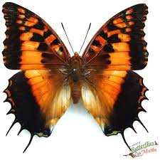 |
| BioLib | Charaxes andranodorus | BioLib.cz | 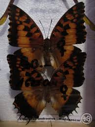 |
| lyga exotic | Charaxes nichetes | 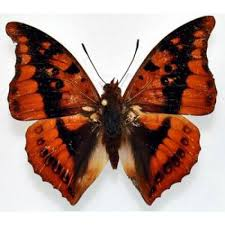 |
| Freepik | Orange butterfly isolated on white. charaxes andranogorus macro close up, collection butterflies, | Premium Photo | 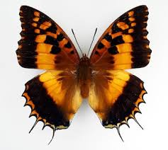 |
| BioQuipBugs | Charaxes andranadorus - BioQuipBugs | 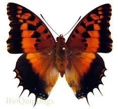 |
| Wikipedia | Charaxes lasti - Wikipedia | 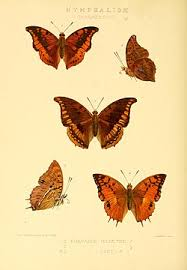 |
| NAVER | 🦋 tribe Limenitidini : 네이버 블로그 | 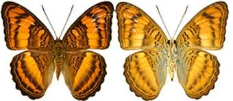 |
| I wonder can anyone please identify this insect. There were two waiting beneath the flower heads bi imagine in a predatory way. Thanks. | 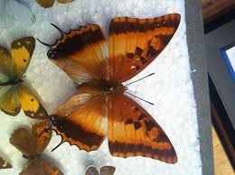 | |
| letting nature back in | Caterpillars with wings: An eye witness account of Battling Glider butterflies after hatching – letting nature back in | 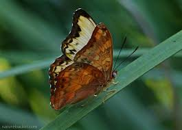 |
| World of Butterflies and Moths | Charaxes lasti KENYA - World of Butterflies and Moths | 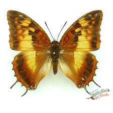 |
| India Biodiversity Portal | Cirrochroa thais Fabricius, 1787 by Aruvi on 7 November 2020 | 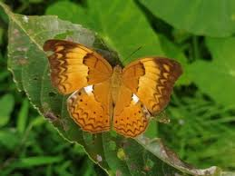 |
| iNaturalist | Photos of Angular Glider (Harma theobene) · iNaturalist | 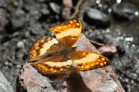 |
| owad261 | Charaxes andranodorus Mabille, 1884 Madagascar 88mm25n Charaxes andranodorus Mabille, 1884 | 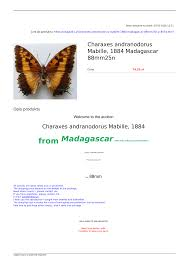 |
| Discover 84 Moth series ✨ and moth ideas on this Pinterest board | beautiful butterflies, butterfly pictures, beautiful bugs and more | 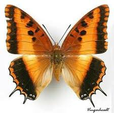 | |
| Wikipedia | Argynnis laodice - Wikipedia | 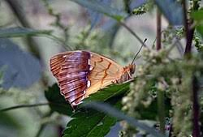 |
| Insect collector's shop | Charaxes andranadorus - Insect collector's shop | Collectionneur d'insectes | 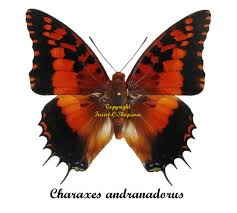 |
| Threads | Butterfly collectors I have a question! I just moved into a furnished rental. Some of the pieces of furniture are large wooden chests of drawers that are really thin. When I opened | 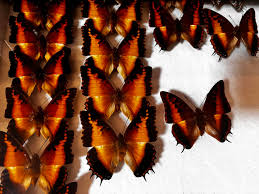 |
| it-n.jp | Athyma sinope aesta | 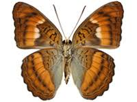 |
| SHILAP Revista de lepidopterología | View of On the butterflies of genus Precis Hübner, 1819 known in Angola, with description of a new species (Lepidoptera: Nymphalidae, Nymphalinae) | SHILAP Revista de lepidopterología | 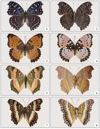 |
| Wikipedia | Hypanartia lethe - Wikipedia | 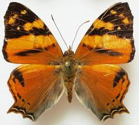 |
| Shutterstock | Doleschallia Bisaltide Butterfly Leaf-shaped Wing Pattern Stock Photo 2732826709 | Shutterstock | 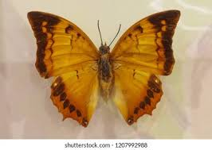 |
| Pngtree | Swallowtail Butterfly PNG, Vector, PSD, and Clipart With Transparent Background for Free Download | Pngtree | 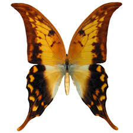 |
| Tanzaniabirds.net | Angular glider | 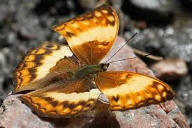 |
| eBay | Butterflies Stamp Silver Bared Charaxes Acraea Swordtail S/S MNH #2770-2773 | 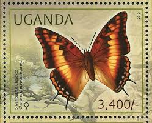 |
| BEUTIFUL BUTTERFLIES OF INDIA 💚🦋💛🦋💚🦋💛🦋💚🦋💛🦋💚 ============================= [1] TAMIL YEOMAN ´´´´´´´´´´´´´´´´´´´´´´´ Tamil Yeoman is a butterfly found in India and Sri Lanka. They are usually found in forest areas and villages. The binomial | 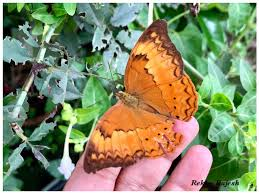 | |
| Kaleidoscope pt.3 🦋 Kaleidoscope explores the journey of butterflies, emphasising their lifecycles and the importance in preservation efforts. It serves as an educational purpose, enabling the audience to perceive these species in | 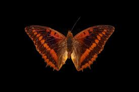 | |
| Barcode of Life Data System (BOLD) | BOLD Systems: Taxonomy Browser - Charaxes andranodorus {species} | 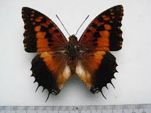 |
| eBay | Vindula erota,UNMOUNTED butterfly | eBay | |
| World of Butterflies and Moths | Charaxes jasius BOTSWANA - World of Butterflies and Moths | |
| Wikipedia | Charaxes phraortes - Wikipedia | |
| eBay | Antigua & Barbuda SC 850-3 Butterfly MNH (1gvc) | eBay | |
| Pngtree | Orange Butterfly Illustration With White Spots For Kids Art, Orange Butterfly, White Spots, Butterfly Illustration PNG Transparent Image and Clipart for Free Download | |
| Rustic (Cupha erymanthis lotis). P. Ubin, Singapore 🇸🇬 | ||
| eBay | Charaxes for sale | eBay | |
| Prey and predator March,2022 Assam,India #WorldWildlifeDay | ||
| eBay | Wynlyn Wings Inc. | eBay Stores | |
| Appias sylvia Kalinzu Forest, Uganda | ||
| Flickr | Large Yeoman - female | Atanu Bose | Flickr |